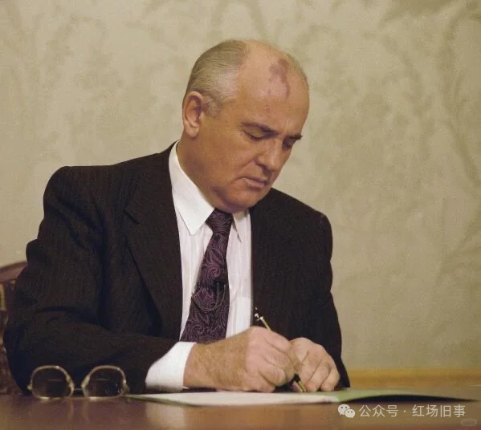
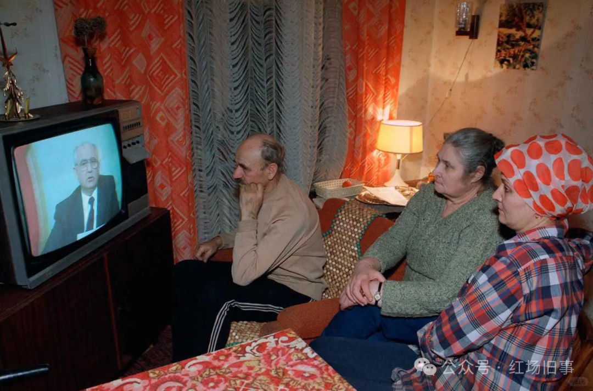
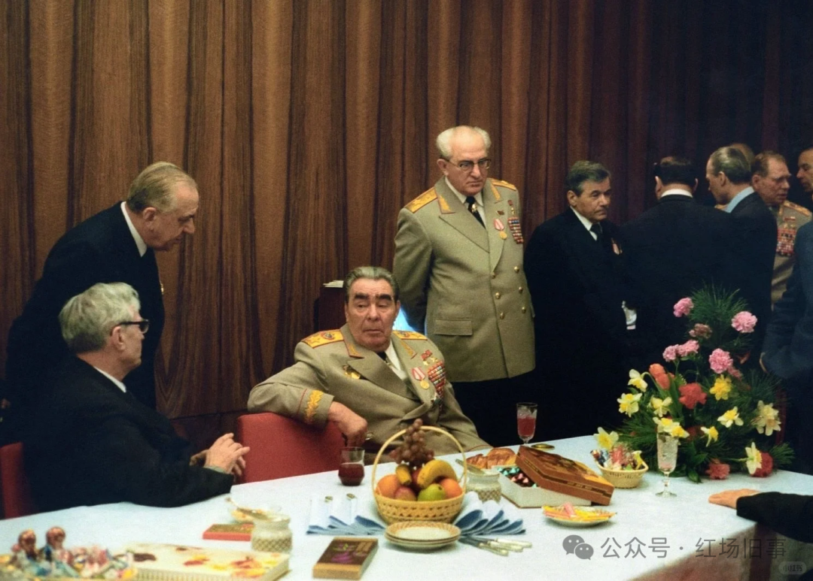
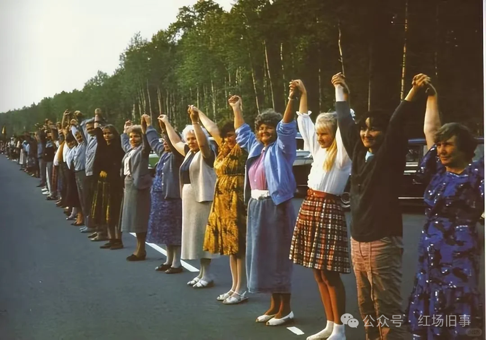
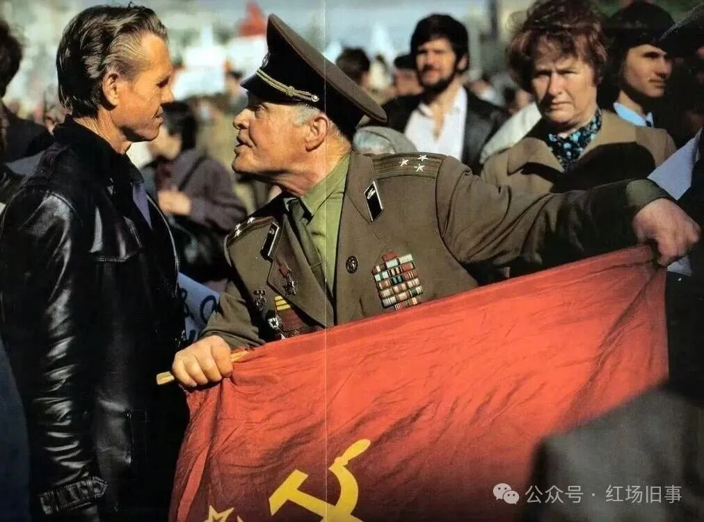

1991年12月25日，红旗落地，苏联死亡
文字与图片版权归各自权利人所有。 查看公众号原文 ↗
莫斯科，1991年12月25日19时32分，克里姆林宫上空，那面已经在风中飘扬了69年的镰刀锤子红旗，此刻它在暮色中缓缓降下。

它见证过十月革命的炮声，见证过红场阅兵的钢铁洪流，见证过加加林飞向太空，也见证过排队买面包的队伍。没有奏乐，没有演讲，没有围观的人群。几名值班人员站在寒风中，看着这面旗被卷起，送进博物馆。取而代之升起的，是俄罗斯联邦的三色旗。一个时代结束了。电视里，戈尔巴乔夫正在发表辞职演说。他的声音疲惫，眼神躲闪，像是一个终于交出考卷的考生。八分钟后，演讲结束。戈尔巴乔夫签署最后一道命令：将核武器控制权移交给叶利钦。

1991年12月25日 戈尔巴乔夫签署放弃苏联总统职务的文件
那一刻，苏联从法律上死亡了。但在更深的层面，它早就死了。
一、别洛韦日协议：三个男人在森林里的决定时间倒回三周前。1991年12月7日，白俄罗斯，别洛韦日森林。俄罗斯总统叶利钦，乌克兰总统克拉夫丘克，白俄罗斯最高苏维埃主席舒什克维奇。三个人，代表了苏联的三个创始共和国。他们来的名义是“商讨经济问题”。但坐下来后，话题很快转向更根本的问题。克拉夫丘克态度坚决：“乌克兰人民已经公投独立。我们不能回到任何形式的中央控制下。”舒什克维奇提议：“我们三个是1922年签署联盟条约的创始国。既然是我们建立的，我们也有权解散它。”12月8日，三人签署了一份简短的协议。核心只有一句：“苏维埃社会主义共和国联盟作为国际法主体和地缘政治现实，停止存在。”消息传到莫斯科，戈尔巴乔夫暴跳如雷。但暴跳之后，他发现自己手里已经没有牌了。12月21日，11个共和国签署阿拉木图议定书，正式宣告苏联解体。戈尔巴乔夫只剩下最后一项工作：体面地离开。
二、辞职演讲：八分钟的谢幕12月25日傍晚，戈尔巴乔夫走进克里姆林宫的电视演播室。“亲爱的同胞们……”

1991 年，民众在电视上观看戈尔巴乔夫总统的辞职演讲
八分钟的演讲，他自己写了草稿，反复修改。他想在历史面前留下一个“体面”的告别。他谈到改革的必要性，谈到遇到的困难。他强调自己“始终是一个坚定的社会主义者”。但最真实的那一刻，出现在结尾：“我理解，这是必须采取的措施。祝大家一切顺利。”灯光熄灭，摄像机停止转动。工作人员收起设备，没有人说话。戈尔巴乔夫坐在那里，久久没有起身。后来他在回忆录里写道：“那一刻，我感觉自己像一个被赶出家门的老父亲。虽然儿女们早已不听我的话，但家门的钥匙，毕竟在我手里。”“现在，钥匙也没了。”
三、苏联70年兴亡：三大病根苏联为什么会解体？七十年兴亡，病根埋在哪里。第一病根：经济失血——军工优先，民生凋敝苏联从诞生起就处于“战时状态”。斯大林用强制工业化打下重工业基础，但也种下“重军工、轻轻工”的基因。此后七十年，这个基因从未改变。20世纪70年代，苏联军费占GDP的15%—20%，是美国的三倍。与此同时，轻工业长期被忽视，商店货架空空如也。1989年，莫斯科开始实行面包配给制。一个超级大国，连面包都配给，还能撑多久？第二病根：体制僵化——老人政治，拒绝改革勃列日涅夫执政18年，留下“稳定”——稳定到一切都不动了。干部终身制，老人政治，思想僵化。任何改革都会触犯既得利益集团。

1985年戈尔巴乔夫上台时，苏联已经像一个被抽空骨架的老人。他想改革，但体制的惯性太大。第三病根：民族离心——帝国外壳，内部异质苏联不是国家，是帝国。15个加盟共和国，100多个民族，各有自己的语言、文化、历史记忆。中央强大时，这些都被压制；中央一旦松动，离心力瞬间爆发。1989年波罗的海“人链”，1990年各共和国主权宣言，1991年乌克兰公投独立——每一块砖都在松动。

1991年12月1日，乌克兰公投，90%赞成独立。那是压垮骆驼的最后一根稻草。没有乌克兰的苏联，就像没有躯干的头颅。
四、一条宿命：帝国终究是帝国三大病根背后，是一条更深的宿命：帝国终究是帝国，靠强制维系的，终将因强制消失而崩溃。苏联的缔造者相信，他们建立的是“新型的国家联盟”。但七十年历史证明：如果加盟共和国没有真正的自愿，如果中央只能靠强制维持统一——那它就是帝国。帝国的逻辑很简单：强大时，一切都不是问题；衰弱时，一切都会成为问题。1991年，苏联衰落了。经济停滞，意识形态破产，中央权威瓦解。于是，被压制七十年的民族问题爆发，被欺骗七十年的民众不再相信任何口号。戈尔巴乔夫是那个最后关门的守夜人。但他开门时，风暴已经灌满了整座房子。
结语：红旗落地的意义1991年12月25日傍晚，那面红旗落下时，有人哭了，有人笑了，更多的人无动于衷。在莫斯科街头，一个老人站了很久。记者问他：“你难过吗？”他说：“我1941年在莫斯科城下打过仗，那时候我们身后就是祖国。现在，祖国没了，我还活着。”

在乌克兰，人们举着国旗庆祝。一个年轻人说：“我们终于自由了。”在波罗的海，教堂的钟声响了一整夜。红旗落下的那一刻，不同的人看到了不同的意义。但有一点是共通的：一个时代结束了。后来有人问戈尔巴乔夫：红旗落下时，你在想什么？他沉默很久，说：“我想起了1985年，我刚上台的时候。那时候我想的是：我们能让苏联变得更好。”“我没想到，更好没有来，结束先来了。”1991年12月25日，红旗落地。一个曾经让世界颤抖的超级大国，从地图上消失了。它留给世界的，不只是核弹和坦克，还有一个永远的追问：一个帝国，怎样才能不死于自己的逻辑？历史没有给出答案。但历史告诉我们：当红旗落下时，后来的人，总会在某个夜晚，想起那面旗。